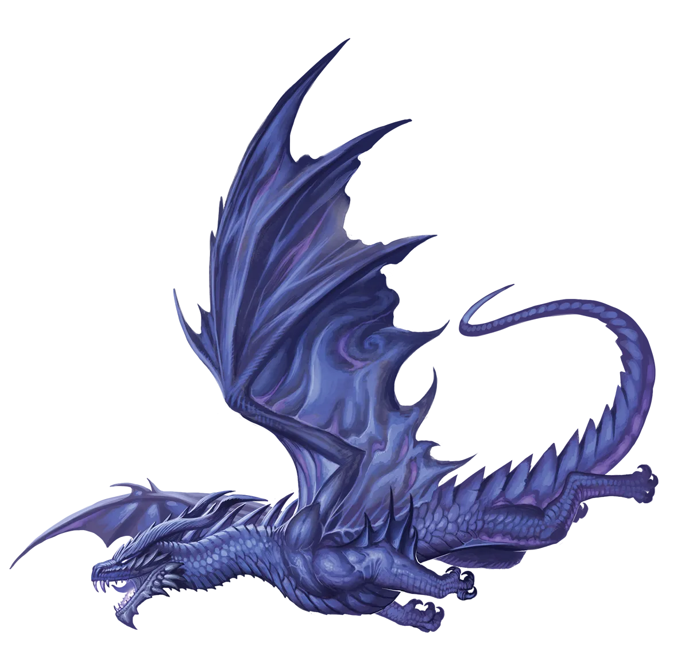
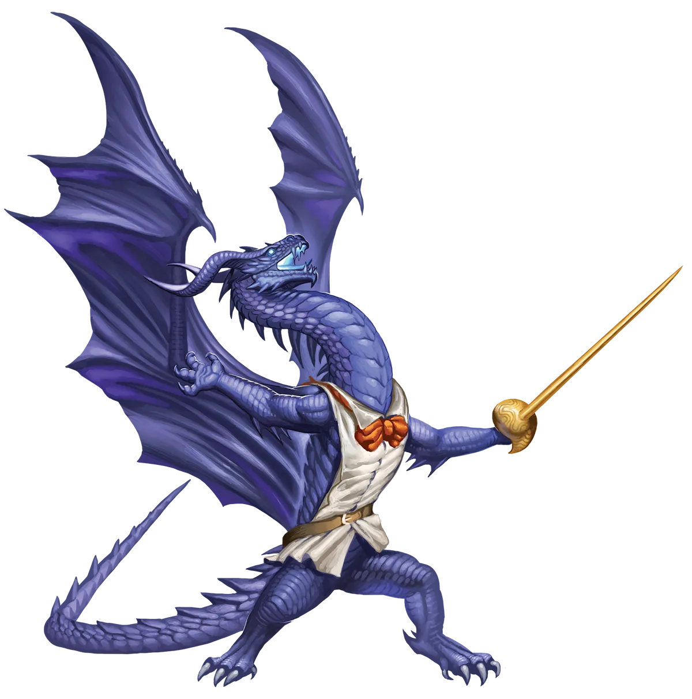

隙缝通往未知
传统派裂隙龙可能混乱，但依我看，它们完全是可以预测的。如果你建造起什么，它们一旦出现，就会不可避免地将其摧毁，就像一个发脾气的孩子。永光裂隙龙则是另一回事。它们的灵活性意味着你无法真正预测它们的反应。当然，有些会像传统派一样摧毁周围的一切，但它们也可能和平经过，甚至帮助建设。有些人觉得这种不确定性更令人不安。
裂隙龙 Rift Dragon |
|
|
裂隙龙的存在只为毁灭。它们对破坏机会的渴望永无止境，以至于往往在生命早期就追求永恒之光仪式，以便更快地提升自身的破坏潜力。在它们看来，这个仪式只是鼓励它们去进行那种无论如何都会去做的持续肆虐。这是行动与意图的完美结合，因为裂隙龙的生活方式在龙类中是少数天生就够快节奏，足以匹配永恒之光所要求的狂乱步伐。如果它们对进行仪式有所犹豫，那只是因为担心在魔法的余波中变得脆弱。毕竟，死亡不仅令人极度不快，也意味着它们毁灭狂潮的终结。 永光裂隙龙知道不能依赖传统派的亲属来寻求庇护，这并非因为传统派对仪式本身有何偏见。与任何裂隙龙互动总是伴随着风险，而虚弱正是传统派裂隙龙攻击年轻永光龙所需的借口。在传统派看来，如果现在不趁它们虚弱时发起攻击，等到永光龙有机会成为真正的威胁时，可能就再也无法击败它们了。 一般来说，热爱破坏的生物都有蠢笨蛮夷的名声。但永光裂隙龙实际上相当聪明，它们认识到了永恒之光仪式所带来的难题。仪式提供的强大力量固然诱人，但其带来的危险也同样巨大。对许多裂隙龙而言，最好的前进方式是聚集那些对破坏的渴望能与自己匹敌的盟友。对毁灭的共同热爱所建立的同袍情谊应能防止新盟友反戈相向。虽然忠诚的概念对裂隙龙来说并非天性，但这并不意味着年轻的永光龙看不到它的价值。 在寻找同伴的过程中，裂隙龙不可避免地会遇到完美契合的对象：冒险者。他们破坏力无尽却又往往极为忠诚，经常置身于必须击败成群敌人或拆解精巧陷阱的境地。尽管鲁莽，冒险者却很少背叛自己人。因此，为了自保，永光裂隙龙会设法混入冒险队伍，在那里它们可以肆意制造混乱，同时受益于同伴间的忠诚羁绊。尽管最初合作的动机可能是自私的，但永恒之光仪式赋予了它们巨大的改变能力。久而久之，许多裂隙龙会对新朋友产生真挚的情感。 永光裂隙龙喜爱能让他们造成最大破坏的职业。这不一定涉及屠杀或痛苦――许多裂隙龙发现对环境的附带破坏同样令人满足。如果计划要求冒险者摧毁巫妖的古老墓穴，以免其中不可言说的秘密诱惑他人走上同一条道途，裂隙龙会想亲手炸掉它。奇械师、野蛮人以及拥有惊人火力的施法者往往具备裂隙龙所需的互补技能。然而，更关心重新建立与无底深渊联系的龙类，则可能转而成为邪术师。 隙缝通往未知 传统派裂隙龙可能混乱，但依我看，它们完全是可以预测的。如果你建造起什么，它们一旦出现，就会不可避免地将其摧毁，就像一个发脾气的孩子。永光裂隙龙则是另一回事。它们的灵活性意味着你无法真正预测它们的反应。当然，有些会像传统派一样摧毁周围的一切，但它们也可能和平经过，甚至帮助建设。有些人觉得这种不确定性更令人不安。 裂隙龙特质 Rift Dragon Traits 你出身于一脉狂暴好战、热衷破坏万物的裂隙龙世系。 |
  |